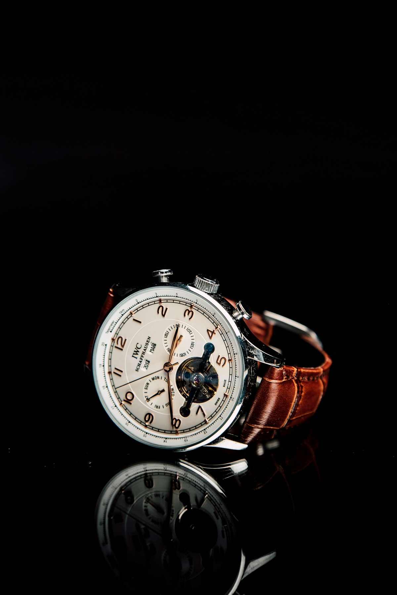
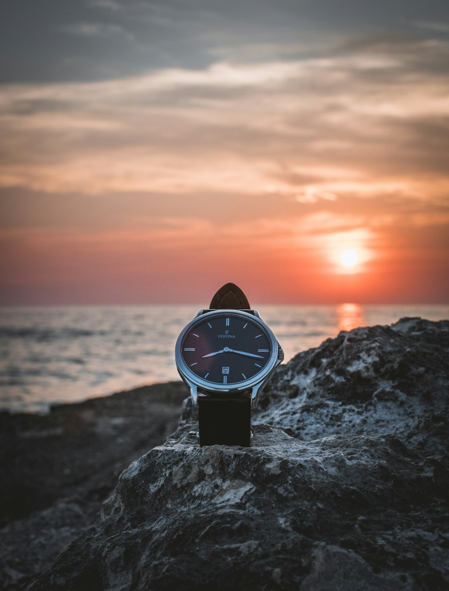
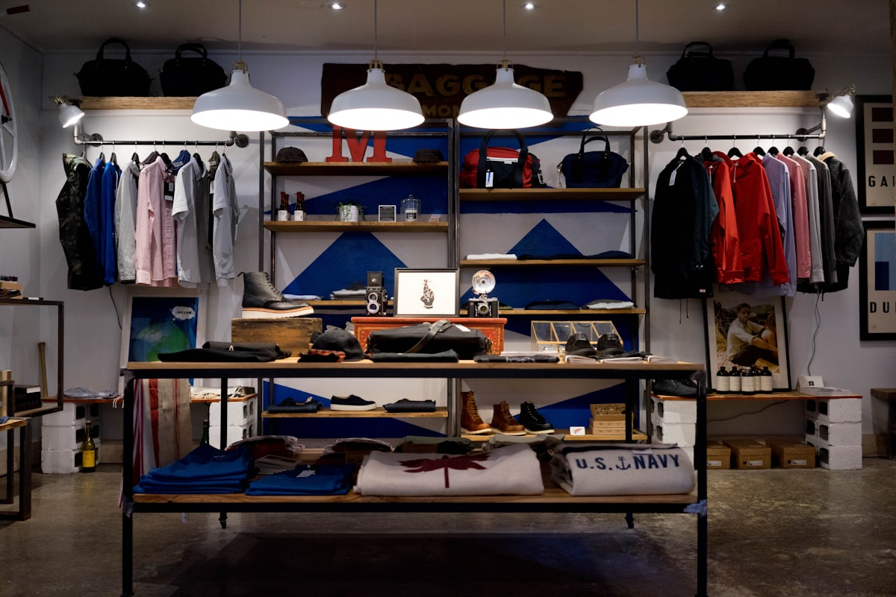

Celestial Seconds Measured in Invar & Rose Gold
Pendulum Craft resurrects the pinnacle of astronomical timekeeping. We engineer bespoke longcase regulators, deadbeat chronometers, and wristwatches equipped with constant-force gravity remontoires for discerning horological collectors globally.
The Quest for True Isochronism: Defeating Thermal Expansion
In classical mechanical horology, temperature fluctuations represent the fatal adversary of precision. As temperature rises, conventional brass or steel pendulum rods expand, lengthening the center of oscillation and slowing the clock's harmonic frequency.
At Pendulum Craft, our timekeeping bedrock is forged in Charles Édouard Guillaume's Nobel Prize-winning metallurgy. We utilize genuine nickel-iron Invar alloy rods possessing a thermal expansion coefficient near zero (under 1.2 × 10⁻⁶ K⁻¹), paired with zinc-mercury counter-compensating cylindrical bobs. This unshakeable mechanical anchor ensures astronomical chronometer rates that defy seasonal climate oscillations.
- Invar 36 Alloy Rods: Vacuum-melted alloy with zero dimensional thermal drift.
- Barometric Aneroid Capsules: Auto-compensates for atmospheric air density drag.
- Synthetic Ruby Pallets: Friction-polished synthetic corundum jewels.
Master Timepieces & Regulators
Each commission is an individual work of micro-mechanical sculpture, built to order in limited annual editions.

The Sovereign Wrist Regulator
A 41mm 18K rose gold chronometer featuring separated regulator dial displays (hours at 12, jumping deadbeat seconds at center, sweeping minutes).
View SpecificationsThe Mercer Observatory Clock
A freestanding seconds-beating pendulum regulator with Invar compensation, twin gravity-arm impulse escapement, and 30-day weight drive.
View Specifications
The Marine Tourbillon Deck Box
A gimbaled marine navigation chronometer housed in solid brass and ebony, driven by a helical hairspring and fusée-and-chain transmission.
View Specifications
Constant-Force Remontoires: Immunity from Mainspring Torque Decay
In standard mechanical watches, the coiled mainspring exerts maximum force when fully wound, gradually decaying over 48 hours. This changing torque alters balance wheel amplitude, causing the watch to gain time initially and lose time as reserve depletes.
Pendulum Craft eliminates torque decay through a one-second spring remontoire. A secondary micro-hairspring situated directly on the escape wheel arbor is rewound by the gear train once every second. The regulating organ receives an unvarying, mathematically constant impulse of energy regardless of whether the mainspring is fully wound or entering its final hour of power reserve.
- One-Second Re-Wind Cycle: Completely decouples gear train friction from the balance.
- Deadbeat True Seconds: Jumping seconds display synchronized with astronomical time.
- Linear Amplitude Stability: 310-degree balance amplitude sustained across 72 hours.

Micro-Mechanics Bench at 181 Mercer Street
Located in Manhattan's historic cast-iron district, Pendulum Craft operates an independent haute horlogerie atelier. In an era dominated by corporate conglomerate assembly lines, our workshop crafts fewer than 40 bespoke regulators and wristwatches annually.
Every bridge is chamfered (anglaged) by hand using gentian wood pegs and diamond paste. Every pinion is burnished on historical Jacot pivot lathes. Each finished timepiece represents hundreds of hours of manual finishing by a single master horologist whose personal signature is engraved on the balance cock.
Schedule Atelier VisitRose-Engine Guilloché & Grand Feu Enamel
Why hand-turned engine-turning on antique rose lathes remains the pinnacle of dial art.
Clous de Paris Hobnail
Turned line by line on hand-cranked straight-line lathes, carving thousands of tiny four-sided pyramidal prisms into solid sterling silver blanks.
Grain d'Orge Barleycorn
An undulating, organic weave pattern generated on rose-engine cam rosettes, scattering ambient light in radiating concentric waves.
Grand Feu Enameling
Pulverized silica and metallic oxides fused to gold dials at 820°C across five kiln firings, yielding an eternal porcelain luster that never fades.
Custom Complications & Case Metallurgy
Tailored to your astronomical coordinates, aesthetic preferences, and wrist architecture.
Astronomical Complications
Incorporate bespoke celestial displays into your timepiece, calculated specifically for your home coordinates anywhere on Earth.
- Equation of Time cam showing true solar vs. mean solar time
- Three-dimensional spherical moonphase accurate to 122 years
- Sidereal time regulator for astronomical observatories
Noble Metal Casework
Machined from solid ingots of 18K ethical fair-mined rose gold, 950 platinum, or forged tantalum with welded teardrop lugs and domed sapphire crystals.
- Flame-blued steel hands tempered at 290°C
- Hand-sewn Mississippiensis alligator straps
- Custom caliber engraving and hallmark registration
Acclaimed by Horological Purists & Connoisseurs
Read what independent chronometer evaluators and collectors say about our timepieces.
"The deadbeat seconds action on the Sovereign Wrist Regulator is the crispest I have witnessed in thirty years of collecting. It jumps with mathematical certainty."
"The Invar pendulum clock standing in our study has held an astonishing rate of under one second per month over two full winter cycles. It is a modern astronomical triumph."
"Their hand-turned rose engine guilloché dials rival the antique masterpieces of Abraham-Louis Breguet. The reflection under sunlight is breathtaking."
Frequently Asked Questions On Precision Timekeeping
Insights into our escapements, servicing cycles, and astronomical certifications.
In standard mechanical watches, the second hand sweeps smoothly at 5 to 10 micro-vibrations per second. A deadbeat seconds mechanism (seconde morte) utilizes a specialized escapement brake or remontoire that halts the second hand, allowing it to jump precisely once per full second, exactly mirroring astronomical pendulum regulators.
Because our movements utilize synthetic Moebius micro-lubricants treated with fluoropolymer epilame surface barriers to prevent oil migration, our wrist regulators operate reliably on a 5-to-7-year service interval, while standing Invar pendulum clocks require maintenance only once every decade.
Yes. Every finished movement undergoes our rigorous 21-day internal testing protocol across 6 physical positions and 3 temperature extremes (8°C, 23°C, 38°C), and can be submitted upon request for official observatory chronometer certification at Besançon or COSC.
Bespoke wrist regulators require 6 to 9 months of individual hand fabrication, engine-turning, and regulation. Full-scale astronomical standing regulators require 9 to 14 months depending on casework cabinet joinery and astronomical complication specifications.